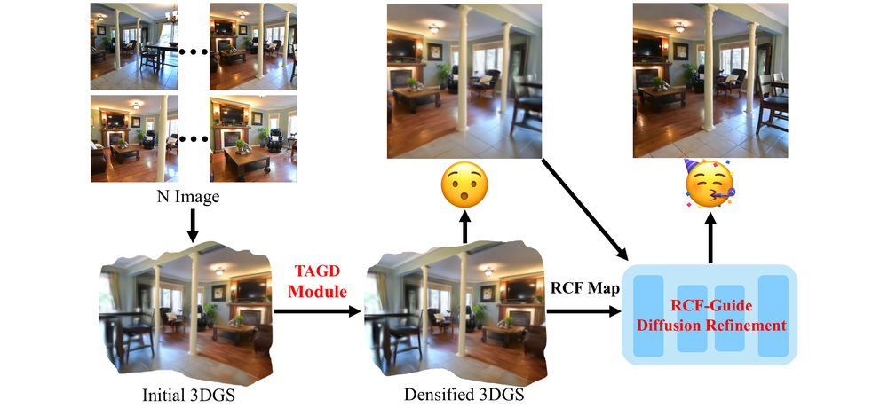
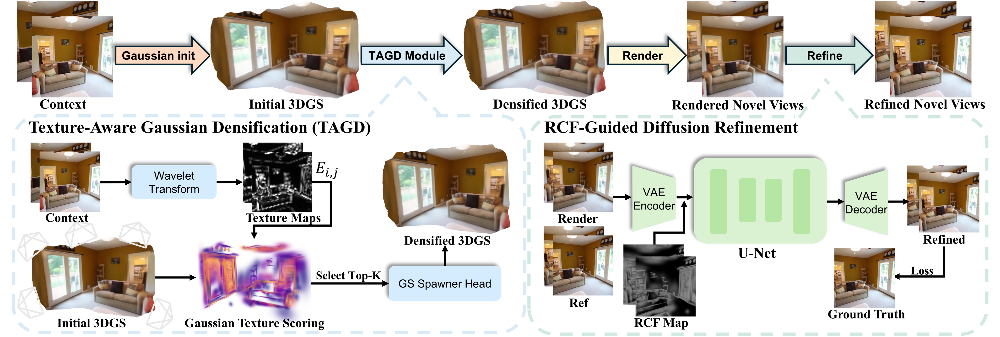
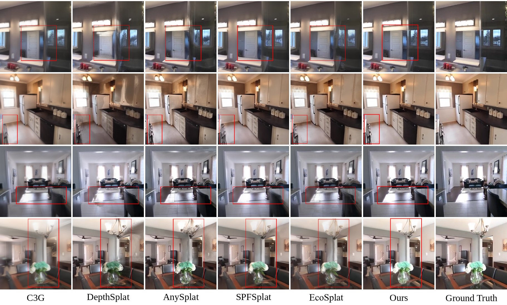
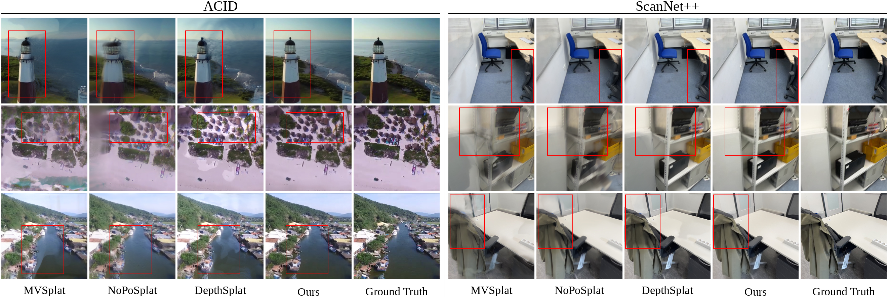
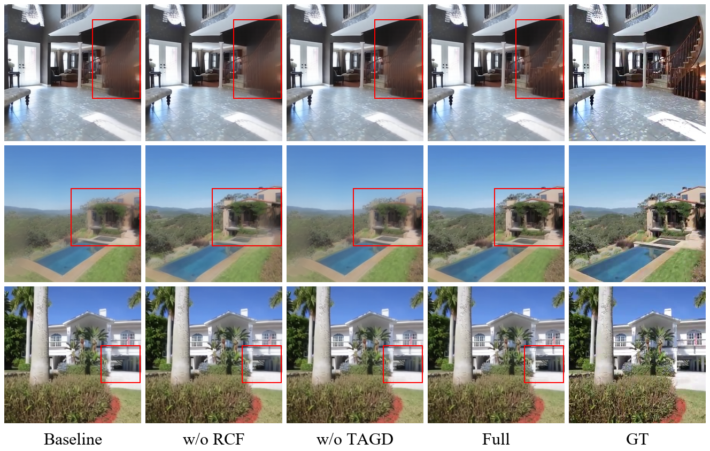
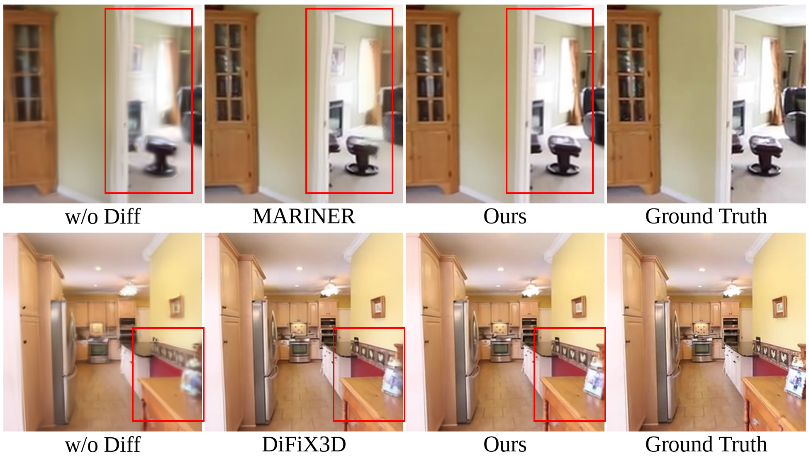

Paper and code will be released after acceptance.






![1: School of Computer Science and Technology, Zhejiang Gongshang University, Hangzhou 310018, China; 2: School of Management and E-Business, Zhejiang Gongshang University, Hangzhou 310018, China; 3: Department of Electrical and Electronic Engineering, Faculty of Technology, Firat University, Elazig 23000, Turkey; 4: Department of Computing Sciences, Tampere University, Tampere 33720, Finland; 5: Systems Research Institute of the Polish Academy of Sciences, Warsaw 01-447, Poland; 6: AGH University of Krakow, Krakow 30-059, Poland; 7: Department of Computer Science, Universidade Federal Fluminense, Niteroi 24210-346, Brazil; 8: Zhejiang Key Laboratory of Big Data and Future E-Commerce Technology, Hangzhou 310018, China; 9: John Paul II University in Biala Podlaska, Biala Podlaska 21-500, Poland; 10: Laboratory of Artificial Neural Networks, Brest State Technical University, Brest 224017, Republic of Belarus](affiliations.png)
![Feed-forward 3D Gaussian Splatting (3DGS) enables rapid prediction of 3D representations from sparse multi-view inputs without costly per-scene optimization. However, existing Gaussian prediction methods struggle to adapt representation capacity to local scene complexity, resulting in redundant primitives in smooth regions and insufficient capacity in texture-rich areas. Moreover, the inherent ambiguity of sparse observations often leads to blurred reconstructions, whereas unconstrained diffusion refinement may introduce appearance inconsistencies or hallucinated content. We propose DetailSplat, a feed-forward 3DGS framework that performs spatially adaptive densification under a fixed Gaussian budget and incorporates diffusion-based refinement for detail enhancement. Specifically, we introduce Texture-Aware Gaussian Densification (TAGD), which aggregates local high-frequency texture cues from the input views into texture complexity scores for individual 3D Gaussian primitives, guiding the spatial allocation of additional representation capacity. We further introduce a Refinement Control Field (RCF), which equips spawned Gaussians with learnable control attributes and renders them from target viewpoints into spatially aligned refinement guidance maps. These maps guide the diffusion model to recover missing details while retaining the existing image structure and appearance. Compared with the baseline with the highest Peak Signal-to-Noise Ratio (PSNR), our method increases PSNR from 27.816 to 29.722 dB on RealEstate10K with 24 input views. The project page is available at https://yrz94.github.io/DetailSplat/.](abstract-mobile.png)